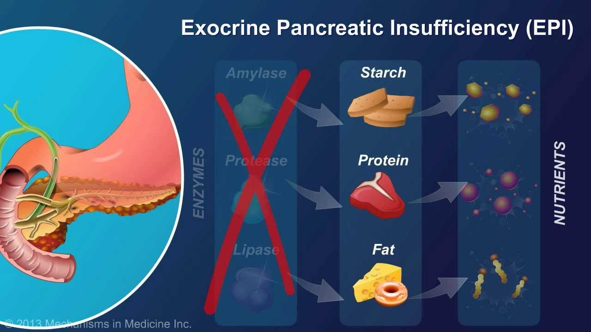

Exocrine pancreatic insufficiency

SYMPTOMS:
The symptoms of EPI overlap with other conditions affecting the digestive system. These include:
- celiac disease
-
irritable bowel syndrome
-
Crohn’s disease
-
ulcerative colitis
-
pancreatic cancer
The symptoms of EPI often go unnoticed. Some of the most common symptoms include:
- stomach pain
-
weight loss due to malnutrition
-
symptoms of vitamin deficiency such as vision problems, muscle spasms, and osteoporosis
-
abnormally fatty and bulky stools due to reduced fat uptake in the intestine
-
diarrhea
CAUSES
- cystic fibrosis
-
chronic pancreatitis
-
pancreatic or stomach surgery
-
diabetes
-
celiac disease
-
inflammatory bowel diseases like Crohn’s disease
-
autoimmune pancreatitis
-
pancreatic cancer
-
Zollinger-Ellison syndrome
DIAGNOSIS:
- Since the symptoms of EPI are similar to other digestive conditions there’s no single symptom that confirms an EPI diagnosis. Your doctor will likely use a variety of techniques to diagnose EPI and detect its underlying causes.
TREATMENT
Diet and lifestyle changes
- Treatment often requires a combination of diet and other lifestyle changes to encourage smoother digestion. This means getting a healthy, balanced diet, which contains the right fats and doesn’t include other things, like high-fiber foods.
Medications and supplements
- You may also need to take vitamin supplements because EPI makes it harder for your body to absorb certain vitamins. Your doctor may prescribe enzyme supplements to replace the ones your pancreas isn’t making.